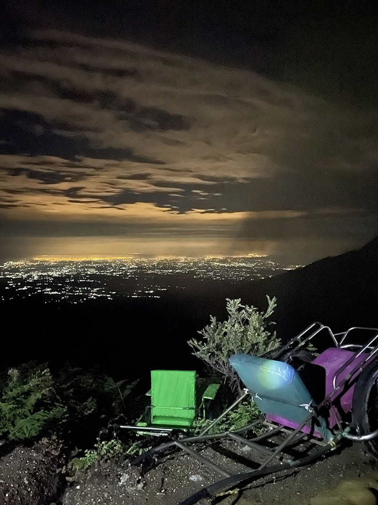

外派於越南，旅遊總是優先找鄰近國家先去，這次找到了印尼有名的火山健行，在做功課階段看了一些遊記與心得，若是自己安排交通找住宿與當地旅行社可以便宜旅遊，但外派人員假期不長，衡量時間成本與旅遊成本後報了3天2夜Tumpak sewu瀑布+Bromo+Ijen火山健行團，加上3天的交通日和休息共6天5夜，雖然少了很多自助的樂趣，但也簡單順利多了。
所以我的行程大致上是這樣
第一天：移動日，河內→峇里島→泗水
第二天：泗水市區一日遊
第三天：健行團開始，第一站Tumpak sewu瀑布
第四天：第二站布羅莫火山
第三站伊真火山，結束跟團+前往峇里島
第六天：峇里島→河內
旅程開始
第一天是交通日，特點是從河內到峇里島的越捷航班載的大部分非越南人，便宜的機票值得人高馬大的阿逗仔忍耐5小時廉航的窄小座位，這也是種金錢就是力量的詮釋。抵達登帕薩國際機場後立刻轉往國內航廈前往泗水（路程不遠走路15分鐘會到，出示國內航班機票可免費搭高爾夫球車前往，車程3~5分鐘且國內航廈候機區的商店及餐廳比河內百貨公司好逛）。抵達泗水已經晚間9點，直接搭計程車去青旅。
第二天外派越南的缺點是假期少的可憐，珍貴的假期一天要當兩天用，無奈這次抱病旅遊，第二天排溫和內市區遊覽順便恢復點體力。一日泗水市區拜訪：「香料市集」其實就是批發市場，大部分是批發紅蔥頭，「鄭和清真寺」是結合中國與印尼元素的清真寺，「潛水艇博物館」展示退役潛水艇內部，「泗水動物園」市區動物園規模不大，內有科摩多龍，「藍色清真寺(Al-Akbar National Mosque Surabaya)」壯麗的清真寺，寺內寧靜清涼，虔誠信徒朝拜，觀景台可一覽泗水市景，這些景點距離都不遠，搭機車grab不貴又快速，如果不是走深度旅遊路線則一日可逛完。
 |
| 香料市集。 |
 |
| 鄭和清真寺。 |
 |
| 潛水艇博物館。 |
| 泗水動物園內有科摩多龍。 |
| 藍色清真寺（Al-Akbar National Mosque Surabaya） |
第三天早上7點旅遊團的司機開始接團員前往第一站Tumpak sewu瀑布，路途中烏雲密布，有些路段已經開始下雨，抵達Tumpak sewu停車場後有當地嚮導接應，步行10分鐘即到達觀景台，非常可惜因為下雨經典瀑布景色被濃霧擋住，直接前往瀑布底下欣賞壯觀宏偉的瀑布，跟著經驗豐富的嚮導指示即可輕鬆拍攝網美照，還有造訪鄰近的小瀑布山洞。下午三點多結束瀑布行程，前往homestay休息。
| Tumpak sewu瀑布。 |
第四天，在homestay休息時間大約只有6小時，凌晨12點就出發往布羅莫火山等待日出，因為下雨的原因在觀景台依然只能看到一片白牆，嚮導建議下山或許霧會散開，果然下了山天氣放晴，景色好的不得了，拔地而起的錐形Botok山與黑沙地像外星球上的景色，是旅遊書孤獨星球印尼篇封面，國內外遊客慕名而來。在沙海短暫停留後，搭著吉普車前往真的布羅莫火山，從停車場走到上山階梯之間是黑沙地，可選擇付費騎馬或是自行徒步，沿途攤販賣的乾燥花可投入火山許願，步行一段路後需再爬長長的階梯到火山口，到達山頂白煙從火山口冒出讓空氣瀰漫淡淡硫磺味，俯望火山口感受壯觀的景色。布羅莫火山行程到此結束，返回homestay吃早餐休息沖個澡便打包行李前往下一站。抵達Bondowoso旅館約下午3點，吃個晚餐辦理入住。補眠幾小時，晚上11點半再次出發。
| 前往布羅莫火山口途中會有攤販賣乾燥花。 |
| 布羅莫火山口。 |
第五天，抵達伊真火山附近的homestay兼咖啡館，許多遊客在這裡等待火山開放時間，我們在這裡與在地嚮導會合，凌晨2點出發爬山，一開始便是連續上坡步行1~2小時，若不擅走路，路邊有素稱山中藍寶堅尼的人力車可付費雇用拉到山頂，但是若要看世界唯二的藍火還要再往下走30分鐘的石頭陡坡，這段路則無藍寶堅尼營業必須自己來回，接近火山口底部硫磺味越來越濃，需要配戴防毒面具，到底部終於見到鼎鼎有名的火山藍色火焰，即使陣陣濃煙竄出，眼睛被刺激到差點張不開，還是有大批遊客圍繞在藍火前紀錄這難得景象，奇景得之不易，但是藍火周圍不時冒出大濃煙只能短暫欣賞，匆匆拍幾張照片及錄影，跟著嚮導往回原路下山天也漸漸亮了，回到咖啡館後伊真火山健行結束，前往外南夢吉打邦碼頭搭船到峇里島。
| 伊真火山入口。 |
|  |
| 夜景與藍寶堅尼。 |
| 藍火。 |
| 觀賞完藍火爬回山頂。 |
| 在山頂俯瞰火山湖。 |
第六天，到峇里島的目的僅有搭機，一早起床去附近的聖猴森林走走，禮品店買買咖啡伴手禮，中午即搭車前往機場返回河內，印尼火山行結束。
| 聖猴森林。 |